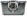
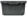
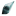
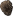

Tipos de missões
Transporte de carga
| Nome | Descrição | Itens | Recompensa |
|---|---|---|---|
| Entrega de armas | A coalizão precisa de armas e munição urgentemente | 1-4 caixas trancadas | 600 Mk por caixa
|
| Risco biológico | Entrega de uma remessa de ovos de parasitas | 1-12 caixas quimicas | 250 Mk por caixa
|
| Meteriais de palhaços | Um sindicato local de palhaços está oferecendo pontos para entregar uma remessa de suprimentos para palhaços | 1-10 caixas de metal | 500 Mk por caixa
|
| Materiais de construção | Uma remessa de materiais de construção precisa ser transportada | 1-25 caixas de metal | 200 Mk por caixa
|
Escolta
| Nome | Descrição | Recompensa |
|---|---|---|
| Transporte de civis | Transporte um passageiro e seu acompanhante para uma estação próxima. | 2000 Mk
|
| Transporte de ativista separatista | Um influente ativista dos Separatistas Jovianos deve ser transportado junto com sua escolta armada | 1500 Mk
|
| Transporte de prisioneiros | Um grupo de prisioneiros precisa ser transportado para uma prisão de alta segurança | 2500 Mk
|
Mineração
| Nome | Descrição | Itens | Recompensa |
|---|---|---|---|
| Minerando quartzo | Fala-se em depósitos de quartzo ao longo do caminho. Traga 8 amostras para verificar essas alegações. | 8 quartzo | 1200 Mk
|
| Minerando diamantes | Fala-se em depósitos de diamantes ao longo do caminho. Traga 8 amostras. | 8 diamantes | 1600 Mk
|
| Mergulho no abismo por Physicorium | Fala-se de depósitos de Physicorium nas profundezas abissais. Traga 6 amostras para confirmar. | 6 Physicorium | 3600 Mk
|
Eliminação
| Nome | Descrição | inimigos | Recompensa |
|---|---|---|---|
| Tomando conta de mudraptors | Um bando de Mudraptors tem aterrorizado embarcações. Uma recompensa de 2000 marcos foi prometida a qualquer tripulação que consiga neutralizá-lo. |  3 3 |
2000 Mk
|
| Hammerheads agressivos | Hammerheads particularmente agressivos têm aterrorizado embarcações. Uma recompensa de 2700 marcos foi prometida a quem matar as criaturas. |  3 3
 1 1 |
2700 Mk
|
| Eliminar um enxame de Threshers | Houve vários relatos de um grande enxame de vespas atacando embarcações. Uma recompensa de 4200 marcos foi prometida a qualquer tripulação que consiga se livrar delas. |  5 5
 3 3
|
4200 Mk
|
| Eliminando um Moloque | Um Moloch particularmente agressivo tem aterrorizado embarcações. Uma recompensa de 5000 marcos foi prometida àqueles que matarem a criatura. |  6 6
|
5000 Mk
|